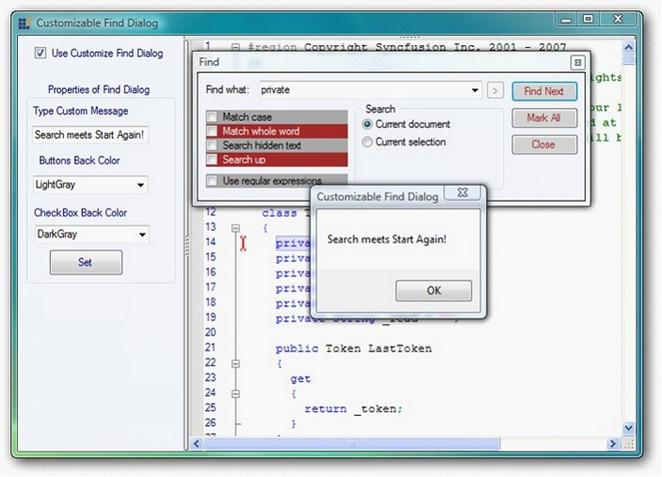

Essential Edit now enables you to create a new find dialog by inheriting Essential Edit’s find dialog. You can customize the Find Dialog by changing the properties and triggers the events of the buttons such as Find, Mark All and Close. You can also easily localize the captions of the controls in the Find dialog.
Creating a Class for Own Find Dialog
Create a class for own find dialog that inherits the frmFindDialog class.
The following code illustrates this.
|
[C#]
//Inherits the frmFindDialog public class FindDialogExt : Syncfusion.Windows.Forms.Edit.Dialogs.frmFindDialog |
|
[VB.NET]
‘Inherits the frmFindDialog. Public Class FindDialogExt Inherits Syncfusion.Windows.Forms.Edit.Dialogs.frmFindDialog End Class |
FindComplete Event
This event occurs in FindNext() when search reaches the starting point of the search before the message box displays.
The event handler receives an argument of FindCompleteEventArgs . This argument class sets the text for message box. Users can localize this text.
|
[C#]
// Handle the FindComplete event. this.FindComplete += new EventHandler<FindCompleteEventArgs>(FindDialogExt_FindComplete);
//Set the value for message box for when search reaches the starting point of search void FindDialogExt_FindComplete(object sender, frmFindDialog.FindCompleteEventArgs e) { //Arabic text as message(localize) if (messageString != string.Empty) e.Message = "انتهى"; else e.Message = "Find reached the starting point of the search."; } |
|
[VB.NET]
' Handle the FindComplete event.
Private Me.editControl1.FindComplete += New EventHandler(Of FindCompleteEventArgs)(AddressOf FindDialogExt_FindComplete)
'Set the value for message box for when search reaches the starting point of search
Private Sub FindDialogExt_FindComplete(ByVal sender As Object, ByVal e As frmFindDialog.FindCompleteEventArgs) 'Arabic text as message (localize) If messageString <> String.Empty Then e.Message = "انتهى" Else e.Message = "Find reached the starting point of the search." End If End Sub |

Figure 72: Customized Find Dialog